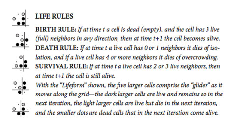
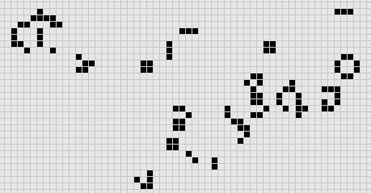
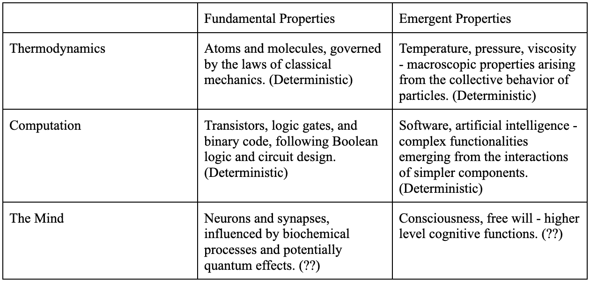
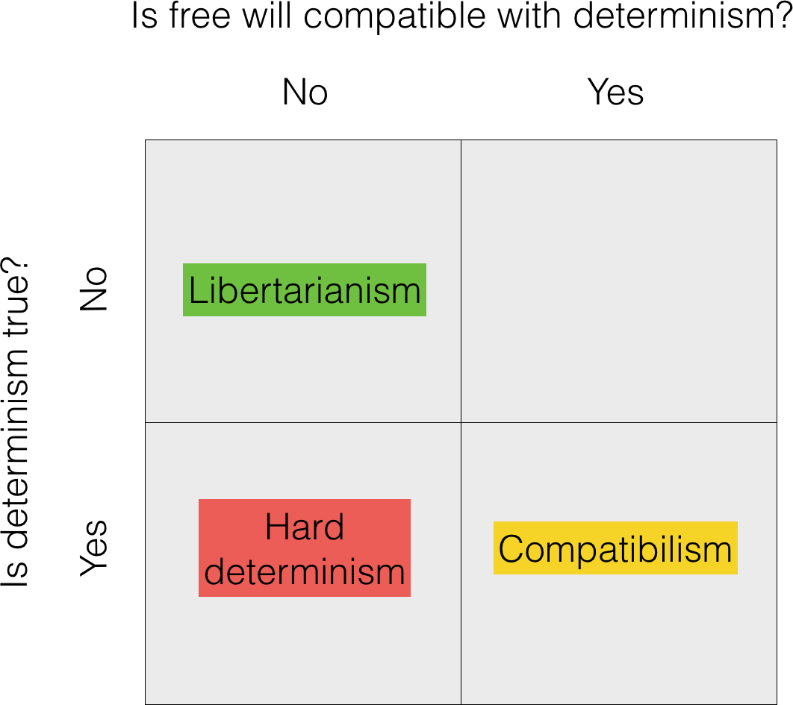

To What Extent Does Quantum Mechanics Impact Free Will?
June 10, 2024
Final paper for APPPHYS 363: Modern Physics & Literature.1. Introduction“I don’t quite understand what it is that compels me to type this letter. Perhaps it is to leave some vague reason for
the actions I have recently performed. I don’t really understand myself these days. I am supposed to be an average,
reasonable and intelligent young man. However, lately (I can’t recall when it started) I have been a victim of many
unusual and irrational thoughts… After my death, I wish that an autopsy would be performed on me to see if there is any
visible physical disorder. I have had some tremendous headaches in the past and have consumed two large bottles of
Excedrin in the past three months.”1
Charles Whitman wrote what would effectively become his suicide note the night before he committed the mass murders at
the University of Texas tower shooting on August 1, 1966. The excerpt above is from the note. Whitman would kill 14 and
wound 31 others the next day before being shot and killed by police. An autopsy showed that Whitman indeed had a tumor
in the white matter above his amygdala, a region of the brain associated with emotion regulation and aggression.2
Is Whitman an evil person or a victim of biology? If we had a perfect account of what was happening at every synapse in
Whitman’s brain, and we learned the difference between what creates a Whitman and not Gandhi, would we consider him
unlucky? These are hard questions because they touch on free will, a phrase that has emerged over the past two millennia
as the "canonical designator for a significant kind of control over one's actions.”3 In talking about free will, we have
to consider questions about causation, laws of nature, time, the relationship of causal and reasons-based explanations,
the nature of motivation, and right and wrong. Even if we get past those questions, there remains the purely empirical
question of whether we have free will, and to what extent we have it.
Something we have done as a species quite well is to use logic, and by extension, math and physics, to get closer to
answers to hard questions. Newtonian mechanics helped us understand the motion of celestial bodies. General relativity
explained the nature of gravity. These are examples of classical physics. Classical physics operates under the
assumption that the universe is a well-ordered, predictable system. This leaves little room for an indeterminate idea
like free will. But quantum mechanics introduces inherent randomness and suggests that certain events at the microscopic
level are fundamentally unpredictable.4 It breaks the strict causal chain of events implied by classical physics. This
indeterminism leaves open a space where not all future events are predetermined, allowing for free will to operate
independently of deterministic physical laws. As a curious species, this is an interesting pond to swim in.
In this paper, I will explain how we should think about free will in the context of physics. The discussion will be
grounded in examples of emergence, a phenomenon where higher-level properties arise from the interactions of lower-level
components in a system. This paper will start with two examples from the classical world, then focus on free will as an
emergent property, and finally discuss the philosophical implications of these findings. All this to make the claim that
whether or not one believes in free will depends on how much influence they think quantum mechanics has on the
decision-making processes within the brain.2. Emergence in Thermodynamics
Emergence is the phenomenon where larger entities and patterns arise through interactions among smaller entities that
themselves do not exhibit such properties. In other words, emergent properties are those that are not present in the
individual components but manifest when these components interact at a system level. Both physicists and philosophers
have thoughts on emergence. Karen Barad, a physicist, has an idea called agential realism, which states that emergence
results through dynamic interactions among parts, where the relationships and exchanges between them create new,
higher-level properties. This process is complex and non-linear, involving both material and discursive elements that
shape reality and knowledge.5 Henri Bergson, a French philosopher, highlights the continuous flow of time and the ongoing
creative process that leads to the diverse forms of life we see.6
How does this manifest in the real world? One example is thermodynamics. At the fundamental level, thermodynamics is
grounded in the behavior of atoms and molecules. But when we observe large collections of these particles, we see
emergent properties that are not evident at the microscopic level. Temperature, pressure, and viscosity are examples of
such properties. These macroscopic quantities arise from the collective behavior of many particles and can be
effectively described without detailed knowledge of each particle's state. The waiter need not know the state of the
universe to know what a customer wants to order for dinner; they can just ask. It is important to note that emergent
properties in thermodynamics are described deterministically and can be predicted from the deterministic behavior of
atoms and molecules, illustrating the concept of weak emergence.
To be clear, even though emergent properties may be complex, weakly emergent properties can be predicted or simulated
based on the underlying micro-level laws, while strongly emergent properties cannot be predicted or derived from the
underlying micro-level laws, no matter how much we know about the microscopic details. The examples listed earlier are
weakly emergent properties. Some think that consciousness is a strongly emergent property. More on that later.
Regardless, the transition from the microscopic to the macroscopic is a cornerstone of thermodynamics, showing how
complex behaviors can emerge from simple, fundamental interactions while still being rooted in the deterministic laws
governing the behavior of individual particles.
Zooming in, statistical mechanics provides the microscopic foundation for thermodynamics by using statistics to link the
behavior of individual particles to the macroscopic properties described by thermodynamic laws. It further proves this
concept by providing the bridge between microscopic interactions and macroscopic properties. The distribution of
particle velocities in a gas, described by the Maxwell-Boltzmann distribution, leads to the emergent property of temperature.7 Pressure arises from the collective impact of countless molecular collisions with the walls of a container.
In statistical mechanics, emergence is characterized by the transition from individual particle behavior to collective
phenomena that can be described by statistical averages and distributions. This framework allows us to derive
macroscopic thermodynamic laws from the underlying microscopic dynamics. The ensemble approach in statistical mechanics
treats large numbers of particles as collections, where the exact state of each particle is less important than the
overall statistical properties of the system.
Emergence in thermodynamics illustrates how higher-level properties and behaviors can arise from the interactions of
simpler elements, with statistical mechanics providing the theoretical foundation for understanding this transition. This interplay between the microscopic and macroscopic realms demonstrates the power of
emergent properties and highlights the importance of statistical methods in uncovering the principles governing complex
systems.83. Computing and Weak Emergence
Another example is computing. At the fundamental level, computing is based on transistors, logic gates, and binary code.
These basic elements interact to give rise to emergent properties like software and artificial intelligence (AI). It can
be agreed that there is nothing mysterious about AI, since the underlying components are well understood. As such, here
see agential realism in action - emphasizing that the behaviors and capabilities of things like AI emerge from the
complex interplay of their underlying components. These properties can be predicted or simulated based on the underlying
micro-level laws, demonstrating the principle of weak emergence. The components at the micro-level follow deterministic
rules, their interactions lead to the emergence of complex, higher-level functionalities that define modern computing
systems. That being said, we can see that the fundamental components and the emergent properties in computing are
deterministic. Emergent properties in computing, much like in thermodynamics, arise from simple, deterministic
interactions at a fundamental level.
4. Conway’s Game of Life
Before we move on to the mind, let’s make a quick pit stop at the Game of Life. Conway's Game of Life provides a
compelling illustration of how simple, deterministic rules can give rise to complex, emergent behaviors. In the Game of
Life, a cellular automaton evolves based on a set of straightforward rules governing the birth, survival, and death of
cells.

Figure 1: Rules to The Game of Life.9
Most of the time you will get something random like this.

Figure 2: An Example of a Cellular Automaton.10
But sometimes the interactions among cells lead to the “emergence” of intricate patterns and structures, such as
gliders, oscillators, and even self-replicating configurations.
Figure 3: Fragment of a Typical Evolution for large 𝑛.11
This emergence mirrors the phenomena we see in thermodynamics and computing. In thermodynamics, the collective behavior
of particles gives rise to macroscopic properties like temperature and pressure, while in computing, the interactions
among transistors and logic gates enable the emergence of software and artificial intelligence. The Game of Life
demonstrates that complex, higher-level behaviors can emerge from simple, deterministic rules, showcasing the principle
of weak emergence. It provides a powerful analogy for understanding how emergent properties in various domains can arise
from fundamental, deterministic interactions.
5. The Mind and Quantum Mechanics
When it comes to the mind, addressing emergent properties becomes more complicated. The mind's emergent properties, such
as consciousness and free will, are influenced by a complex interplay of both deterministic and indeterministic
processes at the fundamental level. Deterministic processes include things in neuroscience, and dynamic networks, or
what we call chaos theory. But the indeterministic process of quantum mechanics is also involved.
Neuroscience reveals neurons firing and synapses transmitting signals in a predictable manner based on the brain's
structure and previous states.12 One interesting example is the "hungry judge effect." Studies have shown that judges are
more likely to issue harsher sentences before they have had lunch, when they are hungry, and more lenient sentences
after eating.13 This phenomenon actually became the basis for the popular Snickers commercials, 'You're not you when
you're hungry.' It is an intriguing yet alarming fact. And chaos theory further highlights the intricate yet
deterministic dynamics of neural networks, where small changes in initial conditions can lead to vastly different
outcomes. But the introduction of quantum mechanics adds an element of indeterminism to the mix. Quantum phenomena such
as superposition and entanglement have been proposed to play a role in brain function, potentially influencing neural
activity and decision-making processes in a fundamentally unpredictable way.14
The interplay between these deterministic and indeterministic processes at the fundamental level makes it not
straightforward to tell whether the emergent properties of the mind, like free will, are purely deterministic. Free will
is unlike the previous cases of thermodynamics and computing, where the emergent properties can be fully described and
predicted based on the underlying deterministic laws. Just as Heisenberg and Bohr debate the implications of quantum
theory in the play Copenhagen, with Heisenberg emphasizing the inherent uncertainty and Bohr stressing the role of the
observer, the question of free will in light of quantum mechanics involves grappling with the tension between
determinism and indeterminism in the brain.15
Let’s revisit the physicist Karen Barad and philosopher Henri Bergson. Barad argues in Meeting the Universe Halfway,
that quantum indeterminacy challenges our classical notions of causality and determinism, opening up new possibilities
for understanding the nature of agency and free will.16 The mind's emergent properties, while still exhibiting some level
of predictability and describability, are ultimately influenced by the complex interplay of deterministic and
indeterministic processes at the fundamental level. Similarly, in Creative Evolution, Bergson talks about the role of
indeterminism and novelty in the evolution of life and consciousness. He argues that the élan vital, or vital impetus, introduces an
element of unpredictability and creativity into the universe, which cannot be fully captured by mechanistic or
deterministic explanations.17 These thinkers resonate with the idea that the mind's emergent properties, such as free
will, may involve a degree of indeterminism arising from quantum phenomena.
Let’s organize our thoughts so far.

Figure 4: Organized Examples x Properties.6. Philosophical Implications for Free Will
What does introducing indeterminism in quantum mechanics mean for our understanding of free will? If quantum
indeterminacy influences neural activity and decision-making processes in the brain, it introduces an element of
unpredictability, challenging the classical notion of a deterministic universe. While microscopic quantum effects may
average out at the macroscopic level, the existence of quantum indeterminacy means that the future is not entirely
predictable from the past, even in principle.18 This leaves open space for free will to operate independently of the
deterministic laws of classical physics.
For example, we can look at the unpredictability arising from the complex interactions of celestial bodies in the Three-Body Problem series, as a metaphor for the emergence of chaotic behavior from deterministic systems.19 The interplay
between deterministic neural processes and indeterministic quantum effects in the brain suggests that free will may
involve a nuanced integration of both elements. Just as the characters in the series grapple with the implications of
unpredictability for the fate of civilizations, the question of free will in light of quantum mechanics invites us to
reconsider our understanding of agency and responsibility.
Despite the indeterminacy introduced by quantum mechanics, Norbert Wiener, computer scientist and philosopher, argues
that it does not necessarily provide a more satisfactory explanation for free will than determinism. Wiener acknowledges
that quantum mechanics introduces an element of indeterminism, stating that "Tyche [chance] is as relentless a mistress
as Ananke [necessity]".20 In Greek mythology, Ananke represents necessity, inevitability, and determinism, while Tyche
represents chance, fortune, and randomness. By equating the two, Wiener emphasizes that both principles are equally
powerful and inescapable forces in the universe. He suggests that random events are no more "free" than predetermined
ones. This slightly opposing perspective to the former claims that the idea that true free will requires a level of
control and rationality that goes beyond mere randomness.
A common argument in favor of the existence of free will is that you cannot run a society without assigning
responsibility. But it has been shown that thoughts, intentions, and actions arise from prior causes beyond conscious
control. So what can be made of this? Perhaps believing that individuals are the authors of their actions actually makes
them better humans. But how we ought to think about free will is a separate discussion from what is actually happening.
From a philosophical perspective, the introduction of indeterminism through quantum mechanics has important implications
for the free will debate. Generally, there are three sides to this debate - determinism, compatibilism, and
libertarianism. Determinists believe that free will is a complete illusion and that all events are determined by
preceding events. Compatibilists believe that free will and determinism are compatible, and that individuals can be free
and morally responsible even if their actions are determined by prior causes. Libertarians believe that we have the
capacity to make genuinely free choices that are not predetermined by prior events. Most philosophers are
compatibilists, some are determinists, and very few are libertarians.21

Figure 5: Three Positions on Free Will and Determinism.21
Libertarian philosophers, who argue for the existence of free will, may view quantum indeterminacy as providing the
necessary break in the causal chain of determinism, allowing for the possibility of genuine free choice. However, as
Jenann Ismael and other philosophers have pointed out, indeterminism alone does not necessarily imply free will, as
truly random events are no more "free" than deterministic ones.23 The challenge lies in reconciling the unpredictability
of quantum events with the rational decision-making processes associated with free will. Additionally, even in a quantum
world, the emergent properties of the mind may exhibit a degree of predictability, as discussed in the context of weak
emergence. Striking a balance between the deterministic and indeterministic aspects of the mind remains a key challenge
in understanding the nature of free will in light of quantum mechanics. As Bachelard notes in Intuition of the Instant,
habit and rational coherence play a crucial role in shaping the mind's emergent properties, suggesting that
predictability and continuity can arise even in a discontinuous, indeterministic world.24
Wait, so even though quantum indeterminacy introduces randomness into events, this randomness doesn't equate to free
will? Unfortunately, yes. Random events, like deterministic ones, are not under our control. True free will requires
rational decision-making, which means making choices based on reasons, not just random occurrences. The challenge is to
understand how our rational decisions can coexist with the unpredictability of quantum events.
7. Conclusion
From a classical physics perspective, the deterministic laws governing phenomena like thermodynamics and computing would
seem to align free will with a deterministic framework. But quantum mechanics introduces an inherent indeterminism that
opens up new possibilities for conceptualizing free will. As articulated by thinkers like Bergson, duration and lived
experience inherently involve memory - the coexistence of the present with an ever-accumulating past.25 If quantum
indeterminacy significantly shapes the neural activity underpinning this flow of memory and consciousness, then free
will may involve a fundamental element of novelty and unpredictability outside the causal chain of determinism.26 Yet,
even if quantum indeterminacy introduces randomness into events, this randomness doesn't equate to free will. Random
events, like deterministic ones, are not under our control.
If classical deterministic processes largely dominate the brain's biochemical machinery, free will may best be
understood through the philosophical lens of compatibilism—as an emergent, higher-level process consistent with (though
not necessarily determined by) the underlying deterministic physical laws. The Copenhagen interpretation's
acknowledgment of indeterminacy at the quantum scale while upholding determinism at the macro level provides a framework
for such a compatibilist perspective. Free will may arise from an integration of deterministic and indeterministic
elements that shape reality and knowledge. Rather than an all-or-nothing proposition, free will plausibly involves a
nuanced interplay of random and deterministic influences.
So, is Charles Whitman an evil person or a victim of biology? From one perspective, if quantum uncertainties critically
influenced Whitman's neurological activity, his tragic actions could be seen as stemming in part from an element of
fundamental indeterminacy - neither fully deterministic nor fully
"free" in the classical sense, but involving a departure from strict causal determinism. Alternatively, if
classical deterministic processes governed his brain's compromised biochemical state, his behavior could be viewed as an
inevitable outcome of deterministic physical laws, leaving less room for a traditional notion of free will. A similar
struggle in ethics is seen in the play Copenhagen, where the characters wrestle with the implications of quantum
mechanics for the understanding of human agency and moral responsibility. Ultimately, the extent to which one believes
Whitman's tragic choices involved an element of free will likely depends on one's perspective regarding the role of
quantum indeterminacy in shaping human consciousness and decision-making, and the philosophical frameworks through which
these questions are interpreted, including but not limited to how even randomness does not provide true freedom.
Footnotes
[1] "Charles Whitman's Suicide Note," Library of Babel, July 31, 1996,
https://tayiabr.wordpress.com/2017/08/26/charles-whitmans-suicide-note/.
[2] "Charles Whitman," Wikipedia, https://en.wikipedia.org/wiki/Charles_Whitman.
[3] "Free Will," Stanford Encyclopedia of Philosophy, January 7, 2002. https://plato.stanford.edu/entries/freewill.
[4] "Quantum Mechanics," Stanford Encyclopedia of Philosophy, November 29, 2000. https://plato.stanford.edu/entries/qm.
[5] Karen Barad, Meeting the Universe Halfway, chapter: "The Science of Ethics and Mattering", July 11, 2007.
[6] Henri Bergson, Creative Evolution (1907).
[7] "Identity and Individuality in Quantum Theory," Stanford Encyclopedia of Philosophy, February 15, 2000.
https://plato.stanford.edu/entries/qt-idind.
[8] "Free Will is as Real as Baseball," Preposterous Universe, July 13, 2011,
https://www.preposterousuniverse.com/blog/2011/07/13/free-will-is-as-real-as-baseball.
[9] Siobhan Roberts, "A Life in Games: The Playful Genius of John Conway," Wired, September 5, 2015,
https://www.wired.com/2015/09/life-games-playful-genius-john-conway.
[10] Chris Lipa, "Conway's Game of Life," Cornell Math Explorers’ Club, https://pi.math.cornell.edu/~lipa/mec/lesson6.html.
[11] "Vanishing Line on Conway's Game of Life," MathOverflow, thread started December 14, 2017,
https://mathoverflow.net/questions/288423/vanishing-line-on-conways-game-of-life.
[12] "Quantum Approaches to Consciousness," Stanford Encyclopedia of Philosophy, November 30, 2004.
https://plato.stanford.edu/entries/qt-consciousness.
[13] "Hungry Judge Effect," Wikipedia, https://en.wikipedia.org/wiki/Hungry_judge_effect.
[14] "Quantum Approaches to Consciousness."
[15] Michael Frayn, Copenhagen (1998).
[16] Barad, Meeting the Universe Halfway.
[17] Bergson, Creative Evolution.
[18] "Free Will is as Real as Baseball."
[19] Cixin, Liu. The Three-Body Problem. 2008.
[20] Norbert Wiener, Newtonian and Bergsonian Time (1961).
[21] "Survey done from The PhilPapers Surveys," https://philpapers.org/surveys/results.pl.
[22] Matthew Van Cleave, "The Problem of Free Will and Determinism," University of Central Florida Introduction to
Philosophy,
https://pressbooks.online.ucf.edu/introductiontophilosophy/chapter/the-problem-of-free-will-and-determinism/.
[23] Kevin Timpe, "Free Will," Internet Encyclopedia of Philosophy, https://iep.utm.edu/freewill/#SH4a.
[24] Gaston Bachelard, Intuition of the Instant (1932).
[25] Gilles Deleuze, Bergsonism, Chapter 3: "Memory as Virtual Coexistence" (1991).
[26] "Ancient Theories of Freedom and Determinism," Stanford Encyclopedia of Philosophy, October 30, 2020.
https://plato.stanford.edu/entries/freedom-ancient.